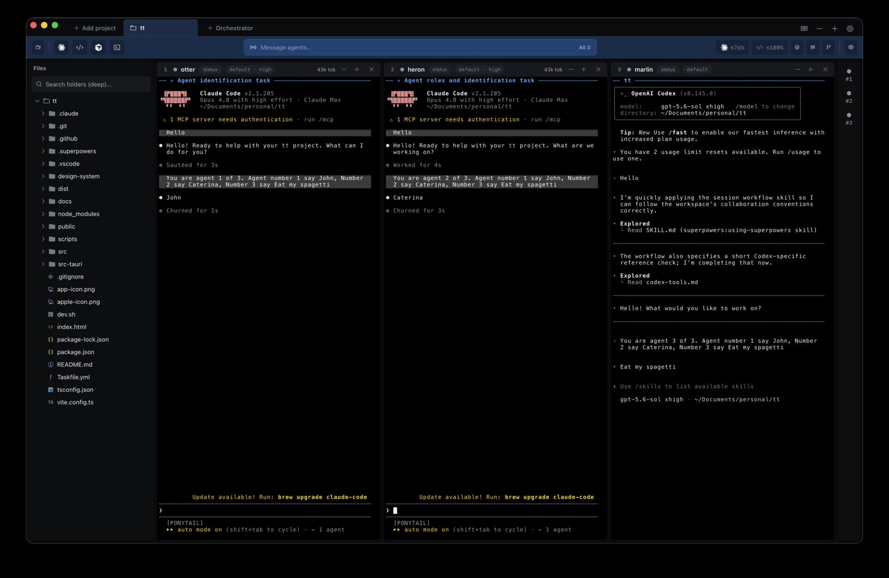

2026-07-18
I've been building this one quietly for a while, using it every day on my own work before showing it to anyone. It's in good enough shape now that I'd rather have people in it than keep polishing alone, so it's open to friends and to anyone who wants to try it.
The problem it solves is embarrassingly simple. I had four coding agents running at once, Claude Code here, Codex there, Cursor in a third tab, and I spent more time hunting for the right terminal than reading what any of them wrote. Which one was still working? Which one had quietly exited twenty minutes ago? Twice I killed an hour of context by closing the wrong window.
So tt puts them all in one place. Add a project folder, spawn an agent in any directory, and they tile themselves:

Three agents there, named otter, heron and marlin. Two are Claude Code, one is Codex. Each tile carries its own status chip, effort level and token count, so the state of the whole workspace is one glance instead of four tab switches.
+-- tt ----------------------------------------------------------+ | [ message agents .................... all 3 ] | +----------+---------------+---------------+---------------+-----+ | projects | otter | heron | marlin | rail| | | claude code | claude code | codex | | | tt/ | * working | * idle | * working | #1 o| | site/ | [in progress] | [in review] | [planning] | #2 o| | files | | | | #3 o| +----------+---------------+---------------+---------------+-----+
That bar across the top sends one message to every agent at once, which turned out to be the feature I use most. "Pull main and rebase" to all three beats typing it three times.
Two decisions did most of the work. First, agents run inside tmux:
tt --spawn--> tmux session --runs--> agent CLI
|
+--> survives closing the app
+--> survives restarting the app
+--> reattach, scrollback still there
Losing an hour of context to a stray Cmd-Q was the thing that annoyed me most, so that had to go away first.
Second, tt doesn't wrap the agents or try to be clever about them. It's Tauri plus xterm.js, real terminals running whatever CLI is on your PATH. Claude Code, Codex, Cursor, Gemini, opencode, Antigravity, or just a shell. Every time I was tempted to parse an agent's output and do something smart with it, I stopped. The agents change weekly. A wrapper would be broken by Thursday.
It's macOS only for now, and the build is unsigned, so the first launch needs a right-click then Open. Source and releases are on GitHub. If you try it and something annoys you, open an issue, that's the whole point of putting it out.
2026-06-21
The question I get most about agentic development is which model to use. I think that's the wrong question. The models are all good enough now that the interesting part is what you ask each one to do.
What settled for me is splitting the work by how expensive a mistake is. Opus plans and reviews. Codex writes the code. Planning and reviewing are where being wrong costs you a day; implementation is where being wrong costs you a re-run.
plan
| Opus. what are we building, what breaks, what order.
v
+----------+
| spec + | written down, in the repo, not in a chat window
| task list|
+----------+
|
+---> Codex ---> task A ---> tests
+---> Codex ---> task B ---> tests
+---> Codex ---> task C ---> tests
|
v
review
| Opus. read the diff like it came from a stranger.
v
merge
The thing that makes this work is the spec in the middle. Not a long document, usually a page: what we're building, what it must not break, and the tasks in the order they should happen. It lives in the repo. Every agent reads the same one, which means I stop being the message bus between them.
The failure mode I hit early was letting a planning conversation run straight into implementation. The agent is agreeable, you're excited, and forty minutes later there's a thousand-line diff built on an assumption you never actually checked. Writing the plan down first is a forcing function. If I can't write it in a page, I don't understand it yet, and no amount of model quality fixes that.
A few things I've settled on:
None of this is exotic. It's mostly the same discipline that made human teams work, applied to collaborators who type faster and have no memory. Which is also why I ended up building tt, because once you're running three of them at once, the bottleneck stops being the models and starts being you keeping track.
2025-07-08
At Done we had a two-sided marketplace, customers on one side and professional installers on the other, and a lot of jobs died in the gap between "I think I need this" and someone actually turning up. A quick video call settles most of that in three minutes. So we put calls inside the app.
The naive version of this is a WebRTC connection and a screen in your app that says someone is calling. It works in a demo and it fails in real life, because nobody is sitting inside your app waiting. The phone is in a pocket, locked. An in-app screen nobody sees is not a ringing phone.
So the work split in two. CallKeep handles the call as far as the operating system is concerned, and WebRTC only shows up once someone has actually answered.
caller callee
| |
|-- start call --> our server |
| | |
| +-- push -----------> device wakes
| |
| CallKeep
| (CallKit on iOS,
| ConnectionService
| on Android)
| |
| native ringing UI,
| answer from the lock
| screen, shows in the
| phone's call history
| |
| [ answered ]
| |
|<========== WebRTC media, peer to peer ========>|
That's the part I'd underestimated. The valuable thing CallKeep buys you isn't a prettier screen, it's that the OS now treats this as a call. It rings properly. It interrupts. It survives the app being backgrounded or killed. It appears in the phone's own call history, and it does the right thing when a real phone call arrives in the middle of yours.
What cost us the most time:
The general lesson I took from it: a call feature is two separate problems that look like one. Getting the media flowing is mostly solved by WebRTC. Convincing a phone in someone's pocket that it should ring is a different problem entirely, and that's the half that decides whether anyone ever picks up.
The media half came back around later. The same peer-to-peer plumbing is what I used for file sharing and calls in TabTasker, where the whole point is that nothing touches a server.
2023-01-24
I gave this talk at Flutter Stockholm, and the demo repo is still up on GitHub.
The setup at Done was the usual one. Search was a database query with LIKE around it. It worked until it didn't: no typo tolerance, no ranking worth the name, and it got slower every month as the data grew. Users type "jhonson" and expect to find Johnson. A LIKE query has opinions about that.
The two obvious options were Elasticsearch, which is powerful and a whole operational commitment, and rolling something ourselves, which is a trap. We went with Meilisearch. Typo tolerance out of the box, sane relevance defaults, and you can have it running locally in about a minute:
brew install meilisearch meilisearch
That last part matters more than it sounds. Search is one of those features where you need to feel the results to know if they're any good, and if trying an idea means provisioning a cluster, nobody tries any ideas.
flutter app
|
| query, keystroke by keystroke
v
meilisearch ---> typo tolerance
| ranking rules
| filters + facets
v
results in a few ms
From Flutter it's just the meilisearch package and a client. You
index your documents once, then query on every keystroke, because it's fast
enough that debouncing is a nicety rather than a necessity. Search-as-you-type
changes how the feature feels more than any ranking tweak does.
The lesson I keep coming back to: search feels like a database problem, so people solve it in the database, and then spend a year fighting it. It's its own problem with its own tools. Reaching for one of those tools early is cheaper than the LIKE query you'll be apologising for later.